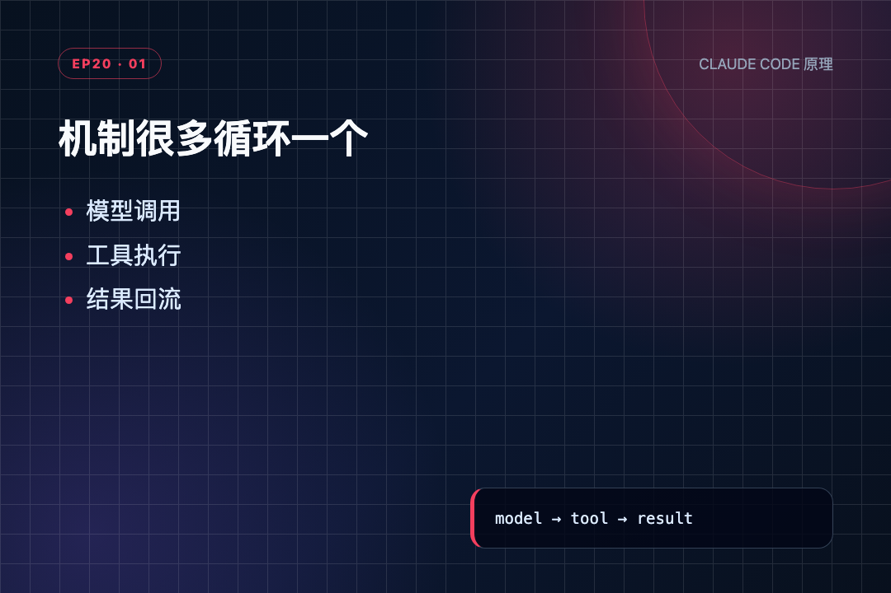
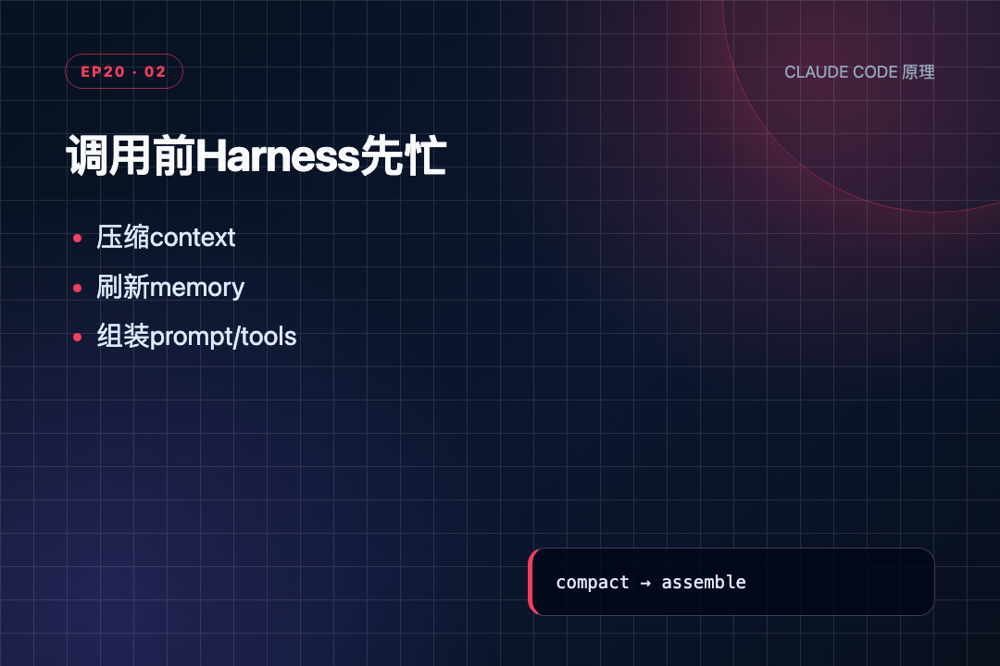
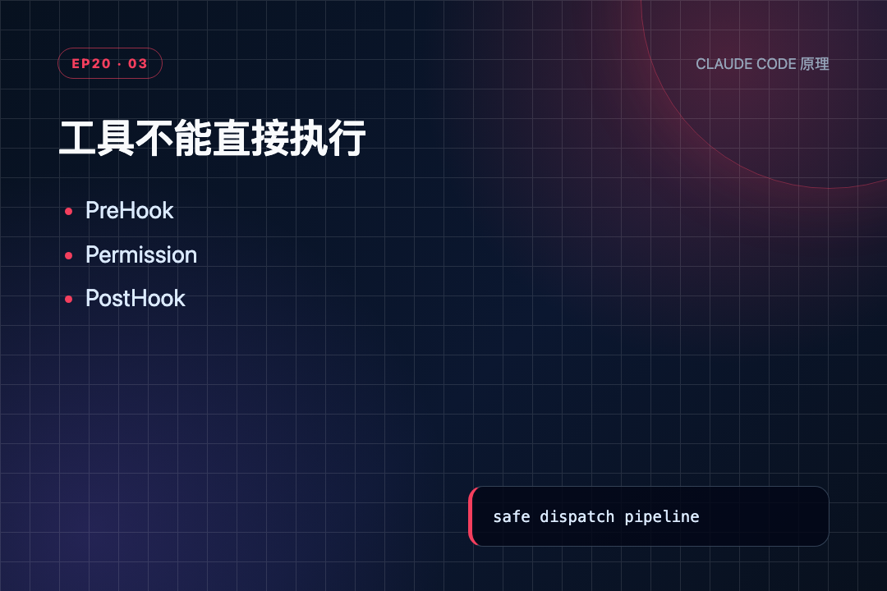
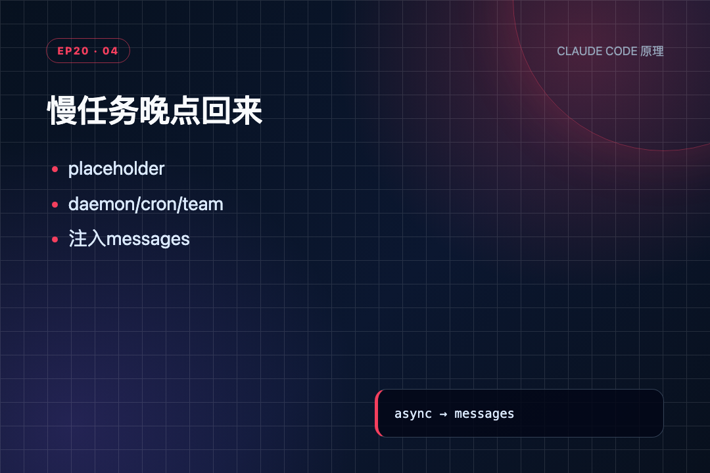

看到 s20 的 code.py 已经长到 2068 行时，我先愣了几秒。
这还是 s01 那个三十来行的 Agent 吗？
可真正把终章读完后，最有意思的不是"功能终于凑齐了"，而是：最中间那条路其实一直没变。
模型给出工具调用，程序执行工具，再把结果还给模型。s01 是它，s20 还是它。
代码从 30 行长到 2068 行，变复杂的不是这个循环，而是围在循环外面的整套程序。
● ● ●
s01-s04 ── 地基 ──────────────────────────────
"模型怎么知道该做什么？"
→ 核心循环 + 工具 + 权限
s05-s07 ── 可扩展 ────────────────────────────
"每加一个能力就改一堆代码？"
→ 技能按需加载 + Hook 插件
s08-s11 ── 健壮性 ────────────────────────────
"上下文超了？API 报错？"
→ 主动压缩 + 记忆持久化 + 多级恢复
s12-s14 ── 异步 ──────────────────────────────
"慢命令堵住？没人发就不动？"
→ 任务依赖 + 后台线程 + cron 定时
s15-s18 ── 团队 ──────────────────────────────
"多个 Agent 怎么协作？"
→ 文件邮箱 + 协议配对 + 自动认领 + worktree
s19 ── 外部接入 ──────────────────────────
"每接一个服务就手写一套？"
→ MCP 协议：连接即发现
s20 ── 总装 ──────────────────────────────
"全部拼回一个能跑的系统"
做 Agent 产品时不需要一次做完所有机制。先跑通核心循环，再逐层加。

机制很多循环一个
● ● ●
核心循环没变，但每个箭头旁边多了"工作人员"：
用户消息 ↓ ┌─ ① 调模型前 ──────────────────────┐ │ 压缩上下文 → 读记忆 → 组装工具池 │ └────────────────────────────────────┘ ↓ ┌─ ② 模型调用 ──────────────────────┐ │ 重试 / 切 model / 截断续写 │ └────────────────────────────────────┘ ↓ ┌─ ③ 工具执行 ──────────────────────┐ │ Hook → 权限 → 后台判断 → handler │ └────────────────────────────────────┘ ↓ ┌─ ④ 两轮之间 ──────────────────────┐ │ cron 到点？后台完成？队友消息？ │ │ → 全部变成新消息注入 │ └────────────────────────────────────┘ ↓ 回到循环顶部
四段话就是整个 s20。下面每段只讲最关键的。
● ● ●
# 每轮调模型前，先整理上下文 prepare_context(messages) # 压缩：太长的只留头尾 context = update_context(...) # 读记忆 + MCP状态 + 队友列表 tools, handlers = assemble_tool_pool() # 重组工具池（含新MCP工具） response = call_llm(...) # 最后才真正调模型
顺序不能乱：先压缩（控制体积）→ 读记忆（补充背景）→ 组工具池（让新 MCP 工具可见）→ 调模型。

调用前先收拾上下文
● ● ●
s01 的调用一行就够。s20 包了 with_retry()：
遇到 429（限流） → 指数退避，等一会再试 遇到 529（过载） → 切到 fallback model 遇到 prompt too long → 压缩历史后重新进入 遇到 max_tokens → 提高上限，继续生成
模型调用在生产里更像一次可能改道的行程，不是按下按钮就必达。
● ● ●
模型说"执行 bash sudo shutdown now" ↓ ┌─ 第一道门：PreToolUse Hook ──┐ │ 插件可以观察或拦截 │ └───────────────────────────────┘ ↓ 通过 ┌─ 第二道门：权限检查 ─────────┐ │ sudo 在 deny list → 拒绝！ │ │ 直接返回 "Permission denied" │ └───────────────────────────────┘ ↓ 没到这一步 ┌─ 第三道门：后台判断 ─────────┐ │ install/build/test → 转后台 │ └───────────────────────────────┘ ↓ ┌─ 第四道门：真正执行 handler ─┐ │ + PostToolUse Hook 收尾 │ └───────────────────────────────┘
prompt 写"别运行危险命令"是劝告，permission hook 是代码里的门锁。
MCP 工具也走同一个出口——内置工具和外部工具最终都变成"拿到名字和参数，执行 handler，得到 tool_result"。

工具不能直接执行
● ● ●
时间到了 ───────→ [Scheduled] 消息
后台任务完成 ───→ task_notification 消息
队友发来消息 ───→ [Inbox] 消息
MCP 服务端通知 ─→ notification 消息
↓
全部注入 messages
↓
下一轮模型就能看到
异步机制最终都回答同一个问题：这件新发生的事，怎样进入下一轮？
这就是"机制很多，循环一个"的真正含义：不是物理上只有一个 while，而是所有支线最终都回到 Lead 的消息反馈链。
● ● ●
教学版是骨架。真实 CLI 在这之上还加了这些能力：
Skills（技能命令）
s05 自动扫描目录；真实 CLI 加了 skill load 手动加载。实现思路：技能 = Markdown + 可选脚本，加载时注入 system prompt。还多了依赖声明和版本管理。
Slash Commands（斜杠命令）
/help、/compact、/model。实现思路：用户消息以 / 开头时，程序在进入 messages 之前就拦截了，模型根本看不到。
Plan Mode（计划模式）
模型先出计划，确认后才执行。实现思路：临时把工具替换成只读子集，批准后恢复完整工具池。
Checkpoint / Undo（检查点回滚）
每次工具执行前存快照。实现思路：git stash 或文件 diff 记录状态，/undo 时逆序恢复。
Streaming + Interruption（流式 + 中断）
ESC 打断。实现思路：维护"是否在工具调用中"状态，中断时决定完成还是回滚。
这些功能的核心思路和前 19 节一脉相承：外部事件变消息、代码层拦截、状态可恢复。
● ● ●
跑一个确定性探针，不经过 LLM，直接调源码函数：
s20 >> Connect docs, run a safe read, try denied command prepare_context: 1 -> 1 [mcp] connected: docs → ['search', 'get_version'] tool pool: 29 (includes mcp__docs__search) > read_file prehook blocked: None ← Hook 没拦 tool_result: comprehensive demo ← 正常读到文件 > bash sudo shutdown now tool_result: Permission denied ← 权限拦住了，根本没执行 > mcp__docs__search [docs] Found 3 results ← MCP 工具和内置工具走同一条路 message feedback: assistant tool_use → user tool_result → next LLM turn
一次运行验证了三条分支：动态工具发现、Hook 放行、权限拦截。
最后一行最重要：29 个工具、五种异步入口、多条恢复分支，最后仍回到 tool_use → tool_result → 下一轮 这条配对。

慢任务和外部事件最终回到消息流
● ● ●
教学版讲的是"发现→命名→调用"骨架，真实系统补的全是并发安全和生命周期。
复杂的是循环外面的工程
● ● ●
最开始看 s01，我把 Agent 想成"模型 + while True"。
读完 s20 发现这没错，但太像把电脑概括成"CPU + 循环"。真正决定它能不能长期工作的是周围这些：
┌─────────────────────────────────────┐ │ Agent Harness │ │ │ │ 上下文管理 → 记住多少、忘掉什么 │ │ 工具权限 → 能做什么、不能做什么 │ │ 任务团队 → 怎么拆分、认领、交接 │ │ 异步入口 → 没人盯时能不能继续 │ │ 恢复机制 → 出错了会不会死掉 │ │ MCP插件 → 能不能不改代码就扩展 │ │ │ │ ┌───────────┐ │ │ │ 模型 │ ← 大脑 │ │ │ (不变的核心) │ │ │ └───────────┘ │ └─────────────────────────────────────┘
模型负责判断，程序负责让这个判断安全、连续、可恢复地发生。
30 行没有被 2068 行推翻。那 30 行只是地基，后面的每一节都在回答现实世界向地基提出的新问题。
源码地址：https://github.com/shareAI-lab/learn-claude-code